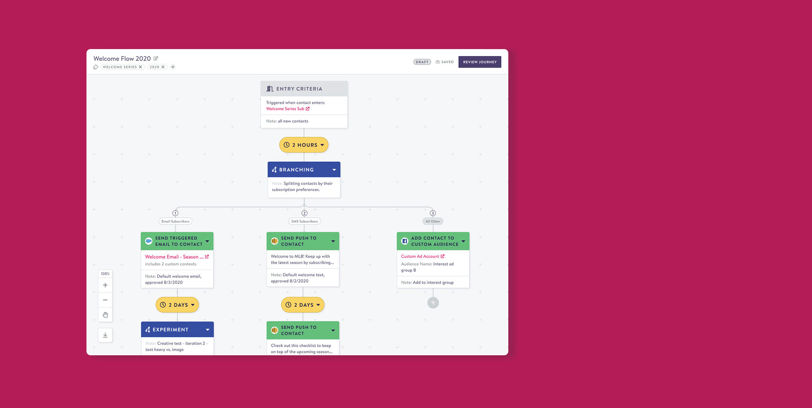
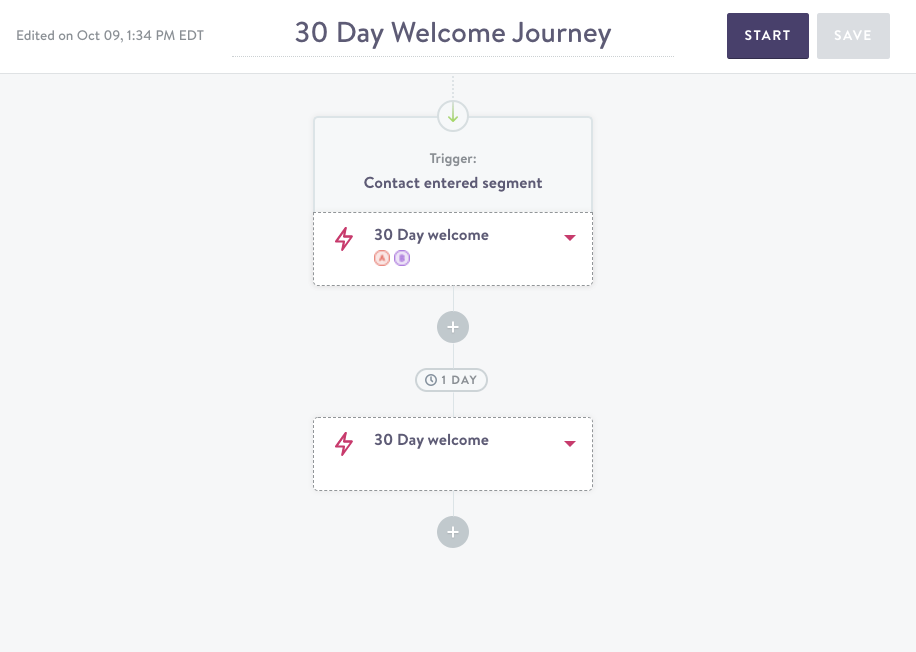
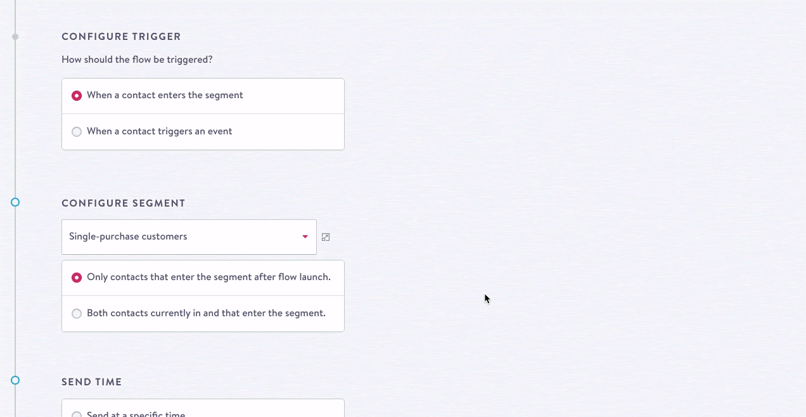
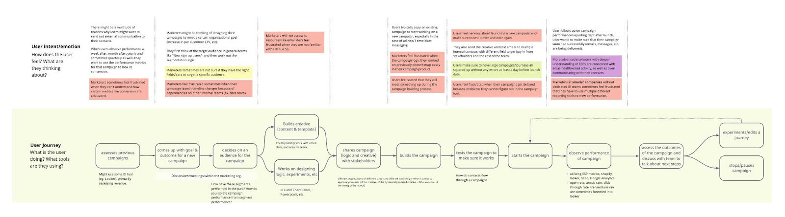
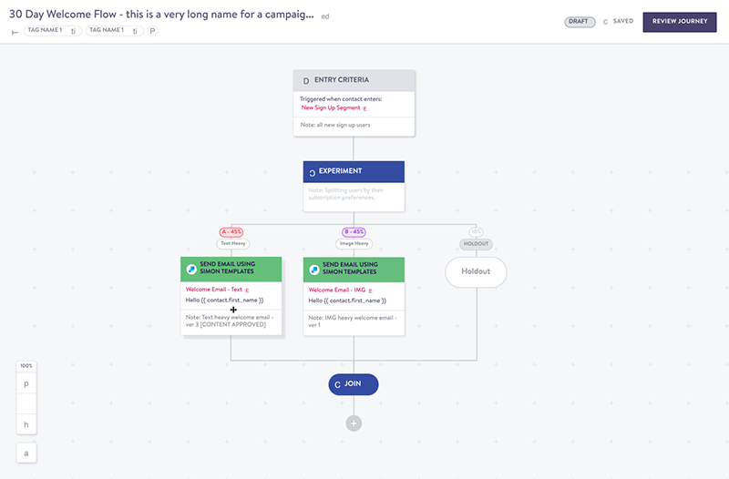
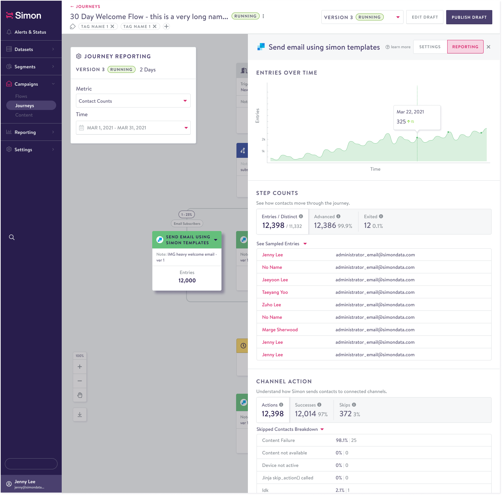
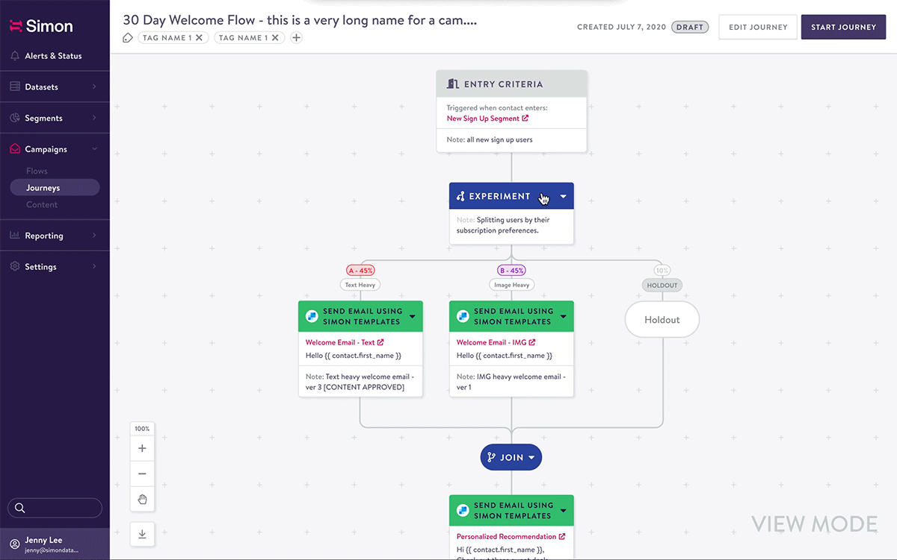
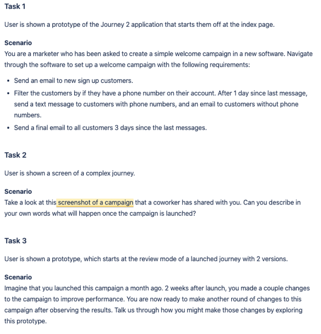
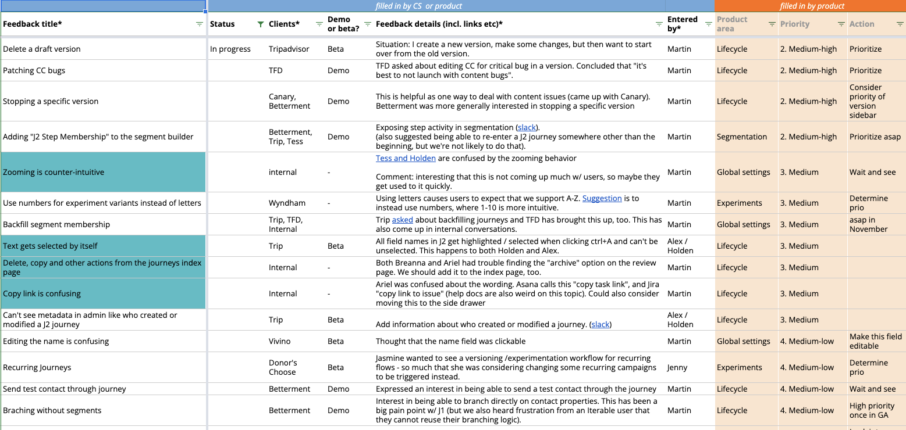

Simon Data / UX, UI, User Research, User Testing
Redesigning the customer journey building experience
Simon Data’s multi-step campaign feature, Journeys, had strong adoption but growing limitations were beginning to frustrate users and contribute to churn.
Product ask
Design an industry-standard multi-step campaign builder that supports flexible, complex cross-channel marketing across SMS, email, and push.
Existing product
A quick audit and previous user feedback identified two core challenges: rigid validation made it impossible to save work in progress, and the graph hid the campaign logic people needed to understand at a glance.


Research
Interviews with five marketers showed that multi-step campaigns were difficult to set up, users feared messaging the wrong audience, and teams relied on external documents to plan and review campaign logic.
User journey and design goal
Research was mapped to each step of the marketer journey, making it clear where the product could remove friction. The guiding goal was to create a builder that mirrors how people construct a multi-step campaign in their minds and empowers them rather than hinders them.

Solutions
The new builder breaks campaign logic into visual nodes that users can drag and arrange like a mind map. A side drawer keeps configuration and reporting details in context, while review mode and versioning make it safer to share and iterate on in-progress campaigns.


Maintaining context
Settings, metrics, and configurations are surfaced in a side drawer, so users can work on an individual campaign node without losing their place in the journey.

Review before launch and safe iteration
Review mode lets teams share work without changing configurations. Versioning lets teams refine a launched campaign, then route qualifying customers to the newly launched version.


User testing
Five select users tested the prototype. The sessions revealed that people accustomed to the previous scroll-based controls initially struggled with infinite-canvas navigation, and that language needed to align more closely with Simon Data’s single-campaign product.

Looking forward
Beta feedback revealed that migration from the original Journeys experience remained a barrier to adoption, informing future exploration of auto-migration tools.
